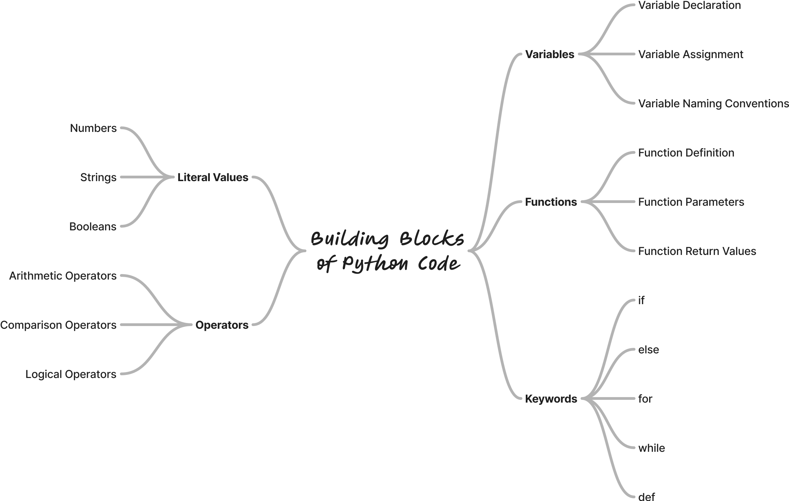

Продолжаем знакомиться с Python!
Код Python состоит из комбинации основных строительных блоков, включающих:
Вместе эти элементы формируют выражения и инструкции (команды), которые составляют основу любой программы на Python.
Литеральные значения: Это фиксированные данные или константы в коде, такие как числа
(42, 3.14), строки ("Привет, мир!") или логические значения
(True, False).
10 # Литеральное значение, представляющее число
"Hello, Python!" # Литеральное значение, представляющее строку
Операторы: Символы или ключевые слова, которые выполняют операции над значениями или
переменными, например, арифметические (+, -), сравнения (==,
>) или логические (and, or) операторы.
5 + 3 # Складывает два числа
x > 10 # Сравнивает переменную с числом
Переменные: Служат для хранения данных и имеют имя, чтобы их можно было повторно использовать или изменять позже.
age = 25 # Переменная с именем 'age', содержащая значение 25
# Оператор = присваивает значение переменной
Функции: Повторно используемые блоки кода, которые выполняют определенные задачи. Например,
print() предназначена для вывода текста на экран. Вы можете создавать новые функции.
def greet():
print("Привет!")
greet() # Вызывает функцию и выводит "Привет!"
Ключевые слова: Зарезервированные слова в Python, имеющие особое значение, такие как
if, else, while, for, def. Их нельзя
использовать как имена переменных.
if age > 18:
print("Вы совершеннолетний!")
Python объединяет эти элементы для создания выражений (которые вычисляют значения) и инструкций или команд (которые выполняют действия). Понимание того, как эти части работают вместе, является ключом к эффективному написанию кода на Python.
Выражения - это комбинации значений, переменных и операторов, которые Python посчитать и вернуть результат.
Простые арифметические (математические) выражения:
5 + 3 # Складывает 5 и 3, возвращает результат 8
Использование переменных:
x = 10
y = 20
x + y # возвращает 30
Вызов функций в выражениях:
len("Python") # возвращает 6 (длина строки)
Булевые (Boolean) выражения:
10 > 5 # возвращает True
Команды - это инструкции или действия, которые выполняет Python, например присваивание переменной значения, вызов функции для вывода на экран или выполнение цикла.
Команда присваивания:
x = 42 # присваивает значение 42 переменной x
Вызов функции print для вывода на экран:
print("Hello, Python!") # выводит "Hello, Python!" на консоль
Условный оператор:
if x > 10:
print("x больше 10") # выполняется если условие истинно (True)
Команда создания (определения) функции:
def greet():
print("Hello!")
greet() # вызвает функцию, которая печатает "Hello!"
Команда цикла (повторов):
for i in range(3):
print(i) # печатает 0, 1, 2
Выражения: их можно вычислить и они возвращают результат.
Пример:
5 * 3 # результат выражения: 15
Выражения могут использоваться внутри команд.
Команда: выполняет действие, и не всегда возвращает результат.
print(5 * 3) # команда выводит результат выражения (15)
Выражения нужны чтобы посчитать значение, а команды определяют действия, которые Python должен выполнить. Нужно понимать и то и другое, чтобы разбираться в коде Python и писать без ошибок!
В Python каждое значение (например, числа, строки или объекты) имеет определённый тип, а переменная наследует тип значения, которое она хранит. Тип определяет, как ведёт себя значение и какие операции можно с ним выполнять.
x = 42 # x имеет тип int
y = 3.14 # y имеет тип float
name = "Alice" # name имеет тип str
print(type(x)) # Вывод: <class 'int'>
print(type(name)) # Вывод: <class 'str'>
Операторы Python (такие как +, -, *, /) работают по-разному в
зависимости от типа значений, к которым они применяются. Некоторые операторы допустимы только для определённых
типов, а другие могут вести себя по-разному в зависимости от типа операндов.
a = 10
b = 3.5
c = "Hello"
# Арифметические операции
print(a + b) # Вывод: 13.5 (int + float = float)
print(a * 2) # Вывод: 20 (int * int = int)
# Конкатенация строк
print(c + " World") # Вывод: "Hello World"
Если вы попытаетесь применить оператор к значению неподходящего типа, Python вызовет ошибку TypeError.
Это гарантирует, что код не выполняет некорректные или неопределённые операции.
Пример недопустимых операций:
a = 10
b = "Python"
# Ошибка: Сложение числа и строки
print(a + b)
# Вывод: TypeError: unsupported operand type(s) for +: 'int' and 'str'
Пример исправления ошибок с помощью преобразования типов:
a = 10
b = "20"
# Преобразование строки в int для выполнения арифметики
print(a + int(b)) # Вывод: 30
# Преобразование числа в строку для конкатенации
print(str(a) + b) # Вывод: "1020"
type().
+, -, *, и /, работают по-разному в
зависимости от типа операндов. Например:
+ складывает числа, но конкатенирует строки.* умножает числа, но повторяет списки или строки.TypeError.int(),
str(), float()) для приведения значений к совместимым типам.Эти принципы подчёркивают, как Python динамически управляет типами и обеспечивает осмысленность операций.
Ошибки при выполнении кода — это нормальная часть процесса программирования. Вместо того чтобы бояться ошибок, важно научиться их анализировать и исправлять. Вот пошаговое руководство:
Python предоставляет подробное описание ошибки, называемое "трейсбеком" (traceback). Он включает:
Тип ошибки (например, SyntaxError, TypeError, NameError).
Сообщение об ошибке, поясняющее, что пошло не так.
Номер строки, где произошла ошибка.
Пример ошибки:
print("Hello
File "example.py", line 1
print("Hello
^
SyntaxError: EOL while scanning string literal
Часто встречающиеся ошибки:
SyntaxError: Ошибка синтаксиса. Например, пропущенные скобки или двоеточие.
if x > 10
print(x)
if x > 10:
print(x)
NameError: Использование неопределённой переменной.
print(x)
x = 10
print(x)
TypeError: Оператор или функция применяются к несоответствующему типу данных.
print("Age: " + 25)
print("Age: " + str(25))
IndexError: Попытка обратиться к несуществующему элементу в списке.
items = [1, 2, 3]
print(items[5])
print(items[2]) # Последний элемент
Вывод значений: Добавьте временные команды print() для проверки значений
переменных.
x = 10
y = 0
print("Before division") # Для отладки
print(x / y)
if y != 0:
print(x / y)
Интерактивная оболочка (REPL): Запустите проблемный код в консоли Python, чтобы проверить его поэтапно.
Если ошибка остаётся непонятной:
# Проверяем деление на 0
if y != 0:
print(x / y)
Ошибки — это не проблема, а возможность учиться и совершенствоваться!
Допишите этот код, чтобы для каждой переменной он выводил её имя, значение, и тип.
x = 10
y = "Привет!"
z = True
a = 5.5
# напишите ваш код ниже этого комментария
Например, для переменной x должен быть такой вывод:
Значение переменной x равно 10, тип: int
Рекомендации:
print() с несколькими аргументами для вывода информации на одной строке.type() чтобы определить тип переменной.Создайте программу, которая печатает список продуктов в корзине в табличной форме. Каждая строка должна содержать:
В конце таблицы отобразите общую стоимость всех продуктов.
🛒 Корзина:
1. 🍎 Яблоки 2 шт. 30 руб/шт 60 руб
2. 🍌 Бананы 3 шт. 20 руб/шт 60 руб
3. 🍐 Груши 1 шт. 25 руб/шт 25 руб
-----------------------------------------
💰 Итоговая стоимость: 145 руб
Рекомендации:
Можете использовать любые названия товаров.
Ниже иконки для некоторых фруктов, - можете использовать их и другие эмодзи:
🍎 Apple
🍏 Green Apple
🍌 Banana
🍒 Cherries
🍇 Grapes
🍓 Strawberry
🍉 Watermelon
🍑 Peach
🍍 Pineapple
🥭 Mango
🍊 Orange
🍋 Lemon
🍈 Melon
🥝 Kiwi
🍐 Pear
🍅 Tomato (technically a fruit!)
🫐 Blueberries
🥥 Coconut
Вот список операторов в Python, сгруппированных по категориям:
Используются для математических операций.
| Оператор | Описание | Пример | Результат |
|---|---|---|---|
+ |
Сложение | 5 + 3 |
8 |
- |
Вычитание | 5 - 3 |
2 |
* |
Умножение | 5 * 3 |
15 |
/ |
Деление | 5 / 3 |
1.666... |
// |
Целочисленное деление | 5 // 3 |
1 |
% |
Остаток от деления | 5 % 3 |
2 |
** |
Возведение в степень | 2 ** 3 |
8 |
Используются для сравнения значений, возвращают True или False.
| Оператор | Описание | Пример | Результат |
|---|---|---|---|
== |
Равно | 5 == 3 |
False |
!= |
Не равно | 5 != 3 |
True |
> |
Больше | 5 > 3 |
True |
< |
Меньше | 5 < 3 |
False |
>= |
Больше или равно | 5 >= 3 |
True |
<= |
Меньше или равно | 5 <= 3 |
False |
Используются для объединения условных выражений.
| Оператор | Описание | Пример | Результат |
|---|---|---|---|
and |
Логическое И | True and False |
False |
or |
Логическое ИЛИ | True or False |
True |
not |
Логическое НЕ | not True |
False |
Используются для присваивания значений переменным.
| Оператор | Описание | Пример | Эквивалентно |
|---|---|---|---|
= |
Присваивание | x = 5 |
x = 5 |
+= |
Сложение с присваиванием | x += 3 |
x = x + 3 |
-= |
Вычитание с присваиванием | x -= 3 |
x = x - 3 |
*= |
Умножение с присваиванием | x *= 3 |
x = x * 3 |
/= |
Деление с присваиванием | x /= 3 |
x = x / 3 |
//= |
Целочисленное деление с присваиванием | x //= 3 |
x = x // 3 |
%= |
Остаток от деления с присваиванием | x %= 3 |
x = x % 3 |
**= |
Возведение в степень с присваиванием | x **= 3 |
x = x ** 3 |
Работают на уровне битов.
| Оператор | Описание | Пример | Результат |
|---|---|---|---|
& |
И | 5 & 3 |
1 |
| ` | ` | ИЛИ | `5 |
^ |
Исключающее ИЛИ | 5 ^ 3 |
6 |
~ |
НЕ | ~5 |
-6 |
<< |
Сдвиг влево | 5 << 1 |
10 |
>> |
Сдвиг вправо | 5 >> 1 |
2 |
Проверяют, содержится ли значение в коллекции.
| Оператор | Описание | Пример | Результат |
|---|---|---|---|
in |
Содержится в коллекции | 'a' in 'apple' |
True |
not in |
Не содержится | 'x' not in 'apple' |
True |
Проверяют, являются ли два объекта одним и тем же.
| Оператор | Описание | Пример | Результат |
|---|---|---|---|
is |
Тот же объект | x is y |
True/False |
is not |
Не тот же объект | x is not y |
True/False |
result = "Да" if x > 0 else "Нет"